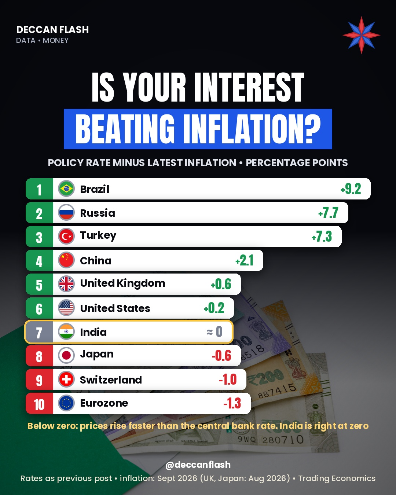

Interest rates · World
Is interest beating inflation?
Take a central bank's rate, subtract inflation, and you get the real interest rate. In India the two are almost equal, so the real rate is right at zero. Brazil pays +9.17 points over inflation, while the Eurozone sits at −1.30, with prices rising faster than its central bank rate.
Policy rate minus latest inflation, percentage points
Policy rates as of 5 Nov 2026, inflation for September 2026. Blue = above inflation, red = below. India is highlighted.
The ranking
| # | Economy | Real (pts) | Rate | Inflation |
|---|---|---|---|---|
| 1 | Brazil | +9.17 | 13.75% | 4.58% |
| 2 | Russia | +7.70 | 14.00% | 6.3% |
| 3 | Turkey | +6.27 | 36.00% | 29.73% |
| 4 | China | +2.10 | 3.00% | 0.9% |
| 5 | United Kingdom | +0.50 | 4.00% | 3.5% |
| 6 | United States | +0.18 | 3.75–4.00% | 3.7% |
| 7 | India | −0.04 | 5.50% | 5.54% |
| 8 | Japan | −0.85 | 1.25% | 2.1% |
| 9 | Switzerland | −1.00 | 0.00% | 1.0% |
| 10 | Eurozone | −1.30 | 2.50% | 3.8% |
Real rate = policy rate minus annual consumer price inflation for September 2026. US: midpoint of the 3.75–4.00% range. China: 1-year loan prime rate. Eurozone: ECB deposit facility rate. Turkey: one-week repo rate. Policy rates are from our interest rates ranking and inflation from our inflation ranking. The chart image below uses rates on 17 October, before the UK raised its rate to 4.00% on 5 November, and August inflation for the UK and Japan, so it shows Turkey +7.3, the UK +0.6 and Japan −0.6.

Quick answers
What is a real interest rate?
The interest rate minus inflation. It shows whether money is growing faster than prices. This page uses each central bank's policy rate, so it compares countries, not your own savings rate.
What is India's real interest rate?
About zero. The RBI repo rate is 5.50% and retail inflation was 5.54% in September 2026, a gap of −0.04 points.
Which country has the highest real rate?
Brazil, at +9.17 points among these 10 economies: a 13.75% policy rate against 4.58% inflation.
Why is Turkey's rate 36% but its real rate lower than Brazil's?
Because Turkey's inflation is 29.73%. Subtract that from 36% and the real rate is +6.27 points.
Where is the real rate negative?
In India (just), Japan (−0.85), Switzerland (−1.00) and the Eurozone (−1.30).
Sources
- Bank of England: Bank Rate raised to 4% (5 Nov 2026)
- Money Times: Copom holds Selic at 13.75% (4 Nov 2026)
- Business Today: India's retail inflation 5.54% in September, MoSPI data (12 Oct 2026)
- RBI hikes repo rate to 5.50% (7 Oct 2026)
- Admirals: Fed holds at 3.75–4.00% (28 Oct 2026)
- Morningstar: US September CPI at 3.7% (Oct 2026)
- Eunews: euro area September inflation 3.8%, Eurostat (16 Oct 2026)
- ForexFundamentals: ECB rate decision, unchanged (29 Oct 2026)
- ForexFundamentals: Bank of Japan holds at 1.25% (30 Oct 2026)
- investingLive: Japan September headline CPI 2.1% (22 Oct 2026)
- Professional Pensions: UK CPI 3.5% to September (21 Oct 2026)
- QNA: Swiss inflation 1% in September (1 Oct 2026)
- Turkish Minute: Turkey cuts rate to 36% (22 Oct 2026)
- Trading Economics: Turkey inflation, September 2026
- The Moscow Times: Russia holds key rate at 14% (23 Oct 2026)
- CNN Brasil: Copom cuts Selic to 13.75% (16 Sep 2026)
- SBS: China keeps loan prime rates at 3.0% and 3.5% (20 Oct 2026)
- Trading Economics: inflation rates by country (Russia, Brazil, China)
Not financial advice.